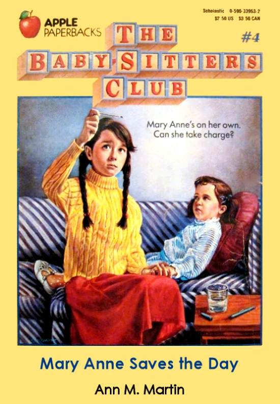

About Mary Anne
Mary Anne is quiet and shy. Perceptive and honest, she sees the best in people. She can be just stubborn as she is shy. Mary Anne is well organized and has the neatest handwriting in the club. Although she is an introvert, she can also come up with really good ideas.
Mary-Anne Saves the Day
Mary Anne's Characteristics
- Quiet
- Kind
- Reliable